.png)
Árvai Dávid
I studied computer science, and even though I'm currently working as a Sales and Service Engineer, my goal has always been to work in IT—building software and web applications. Now I'm ready to make that shift, creating digital solutions that are both functional and a pleasure to use. In my free time, I enjoy exploring new technologies and building small projects.
🎓 Education & Certifications
Computer Science
📍 Sapientia University
Certifications
Work Experience
Service Engineer → Sales Engineer
- Technical problem solving and system analysis
- Understanding customer requirements and technical solutions
- Communication between technical and non-technical teams
📂 Project Categories
Mobile Apps
Web Projects
AI / ML
Desktop Apps
IoT
Backend / APIs
Networking / Security
All
🎧 Radio Player App
View on GitHubA modern web-based radio player built with React, featuring a clean UI layout, animated center visualizer, and radio stream playback.
✨ Features
🧭 Layout
- Left Sidebar — Displays available radio stations, click to switch between stations
- Center Player — Circular visualizer with glow, waveform animation, playback controls, and station name
- Right Sidebar — Recently played songs list
🔊 Audio Playback
- Streams live internet radio stations
- Automatically loads selected station
- Starts paused by default
- Play / Pause toggle
- Station switching
- Auto-reload stream
🎨 Design
- Dark modern theme
- Neon green accents
- Glow effects
- Smooth hover animations
- Responsive layout
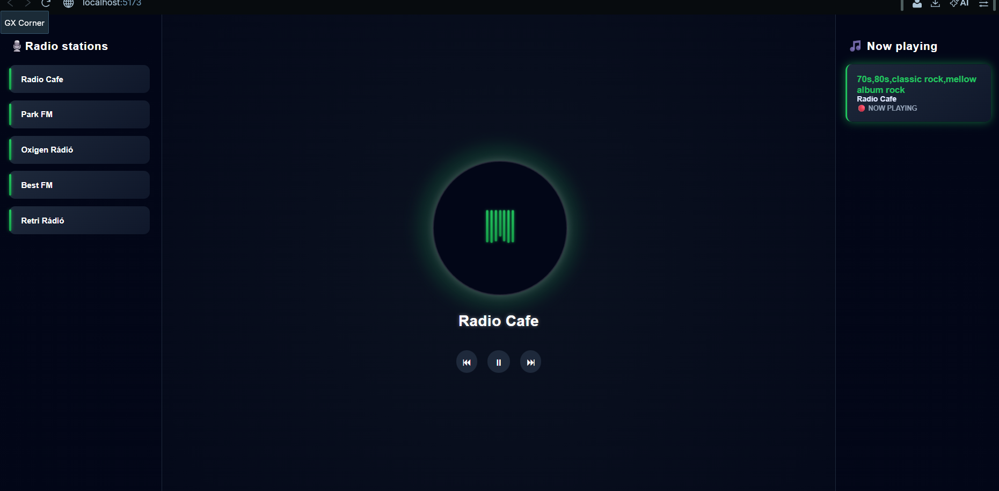
⚙️ Current Development Status
✅ Completed
- Full UI layout
- Radio switching logic
- Audio streaming
- Animated visualizer
- Playback controls
🚧 In Progress
- Song recognition
- Metadata detection
- Dynamic "Now Playing"
Website Project — Node.js & Express
View on GitHubThis project is a web application built using Node.js and the Express framework. It integrates with a MySQL database to manage users, products, and services. The application supports user registration, login, and session management with JWT tokens. Additionally, it includes an admin interface for managing products and services.
✨ Features
- User Registration and Login
- JWT Authentication and Session Management
- CRUD Operations for Products and Services
- Admin-Only Access to Inventory Management
- File Upload Functionality
- Public and Admin-Specific HTML Pages
⚙️ Prerequisites
- Node.js and npm installed
- MySQL installed and running
🛠 Middleware
- authenticateJWT: Middleware for verifying JWT tokens and ensuring the user is authenticated.
- authorizeRole: Middleware for checking user roles to ensure only authorized users access specific routes.
❗ Error Handling
- 404 Not Found: Returns a JSON error message if the requested resource is not found.
- 500 Internal Server Error: Returns a JSON error message for any server-side errors.
Recipe App — Android & Kotlin
View on GitHubThis project was developed as part of a university course. It implements the basic functionality of a recipe management Android application. The project started from a template that provides the necessary structure for further development.
📂 Project Structure
- kotlin-exercises: Folder containing basic Kotlin exercises
- android-project: The Android application project itself
✨ App Features
- Add Recipes: Upload new recipes to the app
- List Recipes: Display all uploaded recipes
- View Recipe Details: Show detailed information for each recipe
⚙️ Technology Details
- Language: Kotlin (100%)
- Development Environment: Android Studio
- User Interface: XML-based layouts
- Version Control: Git / GitHub
🛠 Development Steps
- Clone the template repository
- Complete Kotlin exercises
- Implement core functionality of the recipe app
- Test the application
- Add additional custom features
EventCalendar
View on GitHubA user-friendly, Qt-based desktop calendar application with weekly and monthly views, event management, and category filtering.
Key Features
📅 Monthly View
Easily switch months and days in the mini calendar on the left; the main view automatically updates to show the selected week.
🗓 Weekly View
See the days of the week laid out in hourly slots from 00:00 to 23:00, making it simple to review your daily events.
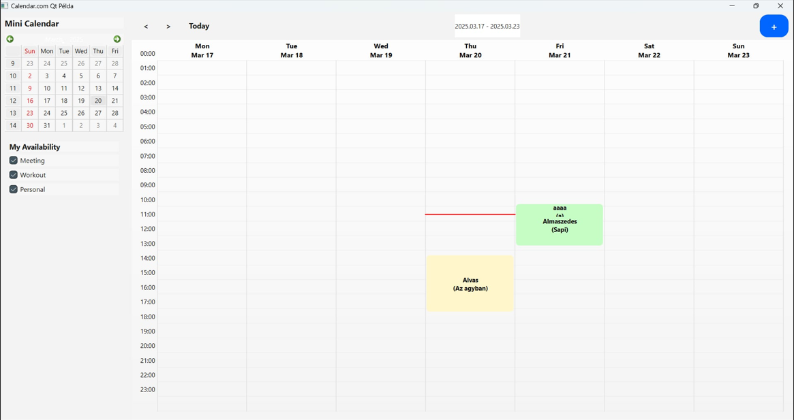
🏷 Event Categories
Supported categories:
- Meeting
- Workout
- Personal
Assign custom labels and colors to distinguish your events.
⚙️ Toolbar & Actions
- Select time intervals to quickly create events
- Edit and move events via drag & drop
- Add new events with the “+” button
Employee System — Unit Tests
View on GitHubThis project demonstrates a simple Employee management system written in Python along with its unit tests.
The purpose of the project is to showcase employee data handling, salary calculation, and team leader functionalities using unit testing.
✨ Features
- ✔ Employee data management
- ✔ Salary and bonus calculation based on team members
- ✔ Email notification validation
The tests ensure that data is processed correctly, bonuses are calculated accurately, and notifications work as expected.
⚙️ Installation & Requirements
To run the tests, you need:
- Python 3 installed (version 3.6 or higher recommended)
- Uses Python’s built-in unittest module
- No additional libraries required
Coin-Flipping Game — Haskell
View on GitHubThis is a simple Haskell program for playing a coin flipping game. The program allows you to simulate flipping a set number of coins and achieving a target configuration by flipping a subset of those coins.
✨ Features
- Calculate the greatest common divisor (GCD) of two numbers
- Check if there is a valid solution for the given number of coins and flips
- Generate all possible flips for a given number of coins and flips
- Simulate the coin flipping process and check if the generated flips are legal
- Find the next possible states based on the current state of the game
- Find the solution to the game using a depth-first search algorithm
Music Player App — Android
View on GitHubThis is a simple music player application for the Android platform. It allows users to browse, play, and control their music easily.
✨ Features
- Listing songs
- Play, pause, skip forward and backward
- Searching for songs
- App settings
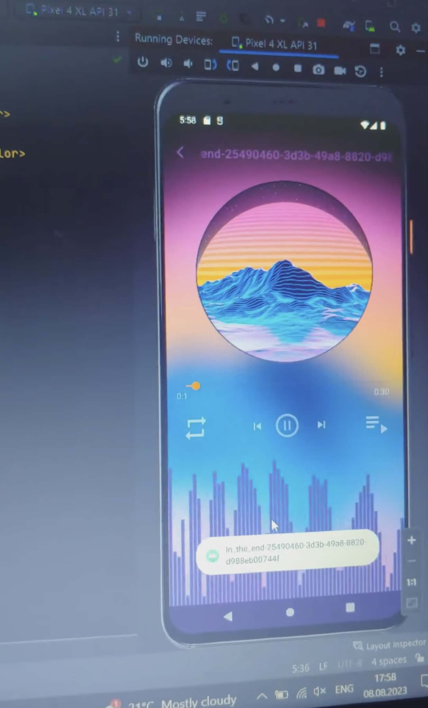
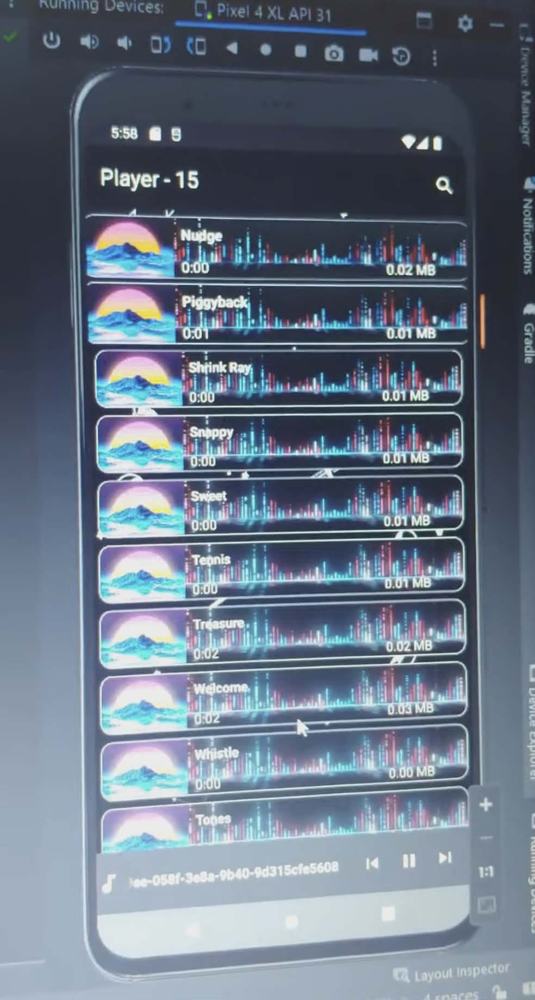
📱 Usage
- Launch the application
- Grant the necessary permissions (e.g., access to files)
- On the main screen, you'll see a list of songs
- Find the desired song and click on it to start playing
- Use the play, pause, skip forward, and skip backward buttons for playback control
Database Project: Movie Management System
View on GitHubThis project sets up a database for managing movie-related information. The database contains tables for movies, users, actors, production companies, languages, countries, directors, categories, and the relationships between them.
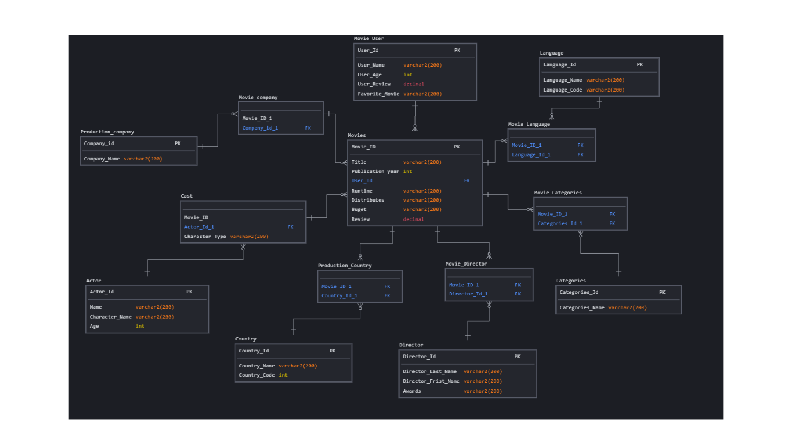
📂 Usage
- Use the provided SQL statements to create and populate the database tables
- Remove any duplicate entries using the provided deletion statements
- Establish foreign key relationships to link the data across different tables
- Use appropriate SQL queries to retrieve and manipulate data as needed
ESP32-WROOM Fan Controller System
View on GitHubAn ESP32-based embedded system that controls a fan based on temperature and humidity readings from a DHT11 sensor, with a web interface.
🔧 Hardware Components
- ESP32-WROOM controller
- DHT11 temperature and humidity sensor
- 5V fan (0.19A)
- IRL540N MOSFET
- 1N4007 protection diode
- Breadboard power module
🔌 Wiring Diagram
- DHT11 data → GPIO26
- MOSFET gate (PWM) → GPIO25
- Fan power → 5V
- Common GND
🌡️ Operation
- Automatic mode: fan turns on if temperature > 26°C OR humidity > 70%
- Manual control via web interface
- PWM speed control for the fan
📱 Web Interface Features
- Real-time temperature and humidity display
- Fan on/off control
- Speed control slider
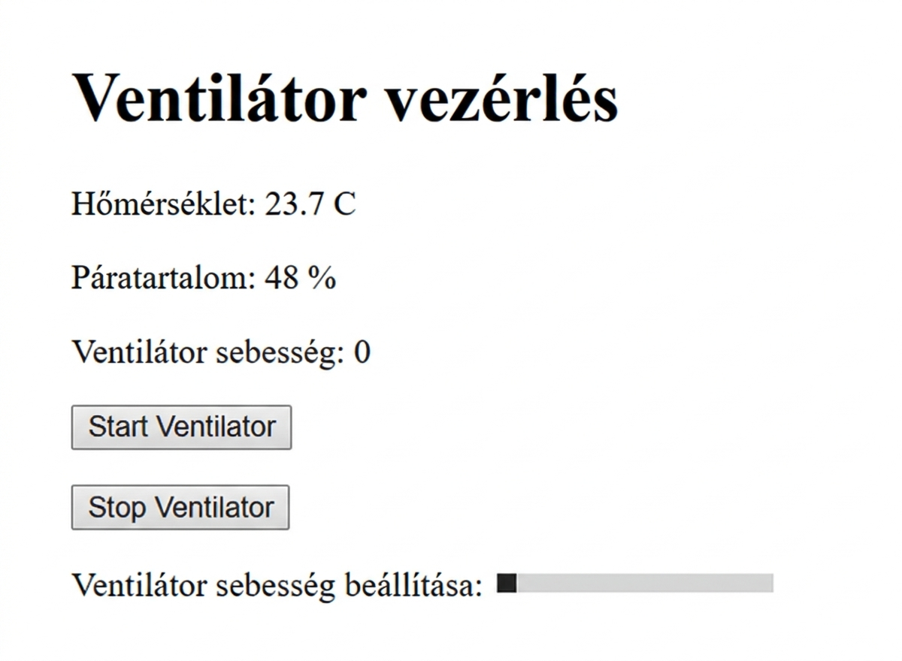
BusCheck — Bus Tracking & Route Finder (Team project)
View on GitHubA very useful application for bus tracking and route finding.
✨ Features
- Registration and signing in ✅
- Google map for orientation ✅
- List of buses and stops of Marosvásárhely ✅
- Bus rating ✅
- Ticket collector alert ✅
- Search for buses and stops ✅
- Route finding - Future feature ⚠️
- Bus tracking - Future feature ⚠️
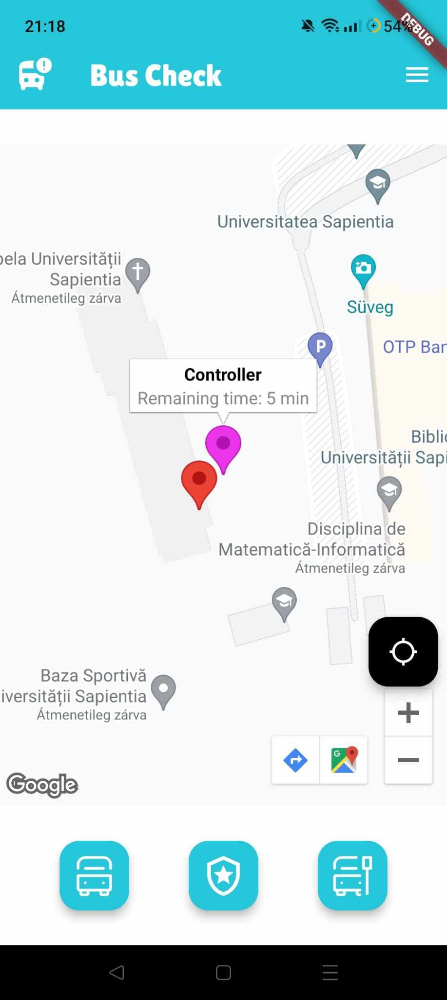
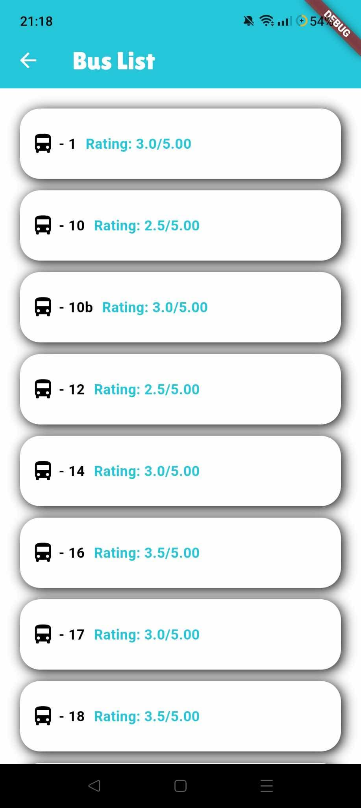
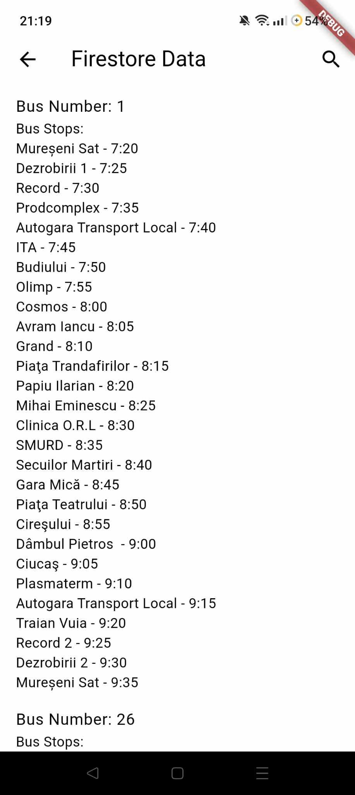
⚙️ Requirements
- Flutter: download and install Flutter
- Virtual phone or a real one connected to your computer (for virtual phone install Android Studio)
- Android version 5+
- iOS version 11+
PHP Basic Task Manager
View on GitHubThis is a simple Task Manager web application built with PHP and MySQL, using XAMPP as the local development environment. The project demonstrates core backend logic, database integration, and CRUD operations in a small, easy-to-understand application.
Note: This project was developed purely for learning and practice purposes. It is a small demo to practice PHP, MySQL, and basic backend development.
✨ Features
- Add new tasks with a simple form
- View a list of all existing tasks
- Delete completed or unwanted tasks
- MySQL database integration for persistent data storage
- Basic PHP form handling and server-side logic
- Clean and simple user interface
🛠️ Technologies Used
- PHP – Server-side scripting and business logic
- MySQL – Relational database for task storage
- HTML/CSS – Basic structure and styling
- XAMPP – Local server environment (Apache + MySQL)
📂 How to Use
- Set up a local server environment using XAMPP (or similar)
- Import the provided SQL file to create the database and tasks table
- Place the project files in the htdocs directory
- Access the application via localhost in your browser
- Start adding, viewing, and deleting tasks!
Python Port Scanner
View on GitHubA simple Python port scanner that checks the status of common ports on the local machine (localhost). This tool demonstrates fundamental network programming concepts by attempting TCP connections to identify open ports.
📚 About This Project: This project was created for educational purposes to demonstrate basic socket programming, TCP connection handling, and port scanning concepts. More features and improvements will be added in future versions!
✨ Features
- Scan common ports on localhost (1-1024)
- Identify open, closed, or filtered ports
- Fast multi-threaded scanning option
- Clear console output showing port status
- Timeout handling for unresponsive ports
- Lightweight and easy to modify
🛠️ Technologies Used
- Python 3 – Core programming language
- Socket module – For TCP/IP connections
- Threading module – For concurrent port scanning (optional)
- Command Line Interface – Simple terminal-based interaction
Brain Tumor Detection and Segmentation — Deep Learning
View on GitHubThis project focuses on automatic detection and segmentation of brain tumors in multispectral MRI scans using state-of-the-art Deep Learning CNNs.
It integrates medical image preprocessing, a deep learning segmentation model, and an interactive web-based diagnostic platform for visualization and analysis.
✨ Key Features
- ✔ MRI Data Processing: normalization, slice extraction, tumor-focused selection
- ✔ Deep Learning Model: modified 2D U-Net for pixel-level segmentation
- ✔ Automated Segmentation Workflow: end-to-end processing and mask generation
- ✔ Web-Based User Interface: interactive upload and analysis in browser
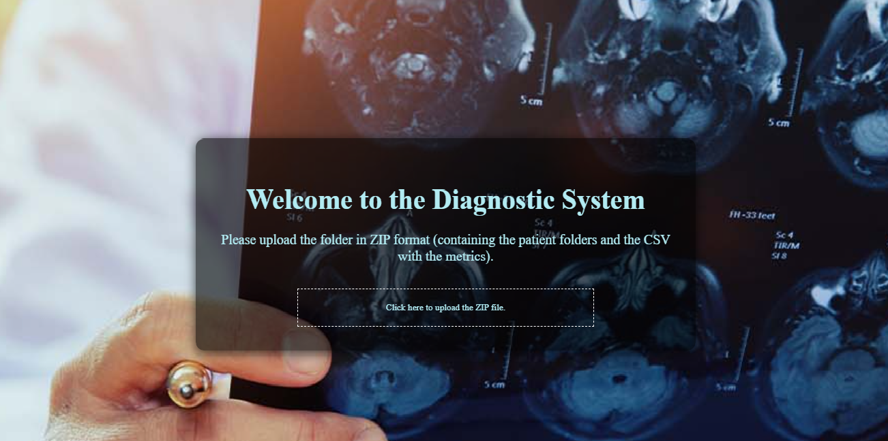
🧠 Advanced Visualization Tools
2D MRI Viewer
- Slice-by-slice navigation through MRI volumes
- Segmentation mask overlay on original scans
- Interactive image exploration
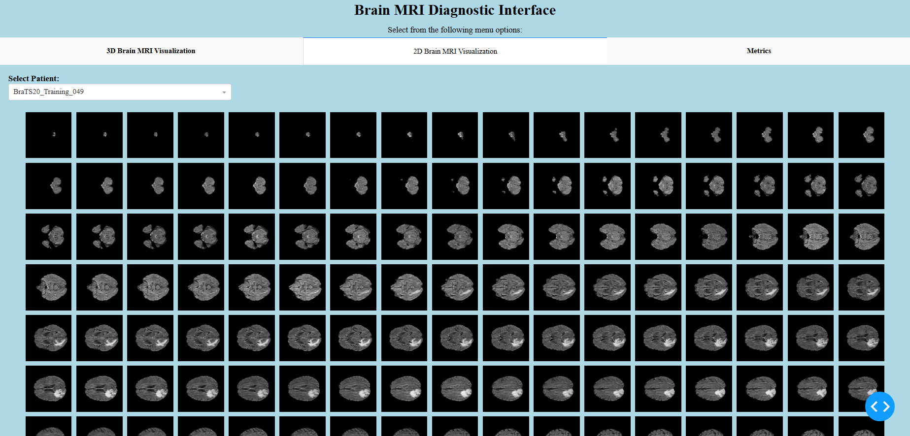
3D Volume Rendering
- Real-time 3D visualization of tumor regions
- Interactive rotation and zoom
- Improved spatial understanding of tumor structure
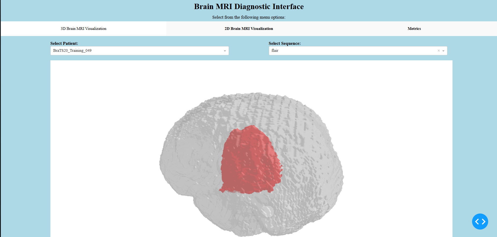
Data Analytics Dashboard
- Visualization of segmentation metrics
- Dice score and performance indicators
- Tumor size and volume statistics
- Training and validation charts
Comparative Viewer
- Side-by-side comparison between original MRI scans and generated segmentation masks
⚙️ Technical Architecture
- Python backend with TensorFlow / Keras
- Automated preprocessing pipeline for NIfTI MRI data
- Web-based frontend for real-time segmentation display
- Dynamic charts for performance monitoring
📈 System Workflow
- Upload: Users upload multispectral MRI files.
- Process: Automated preprocessing and segmentation mask generation.
- Analyze: Explore results via 2D/3D visualization, charts, and comparative viewer.
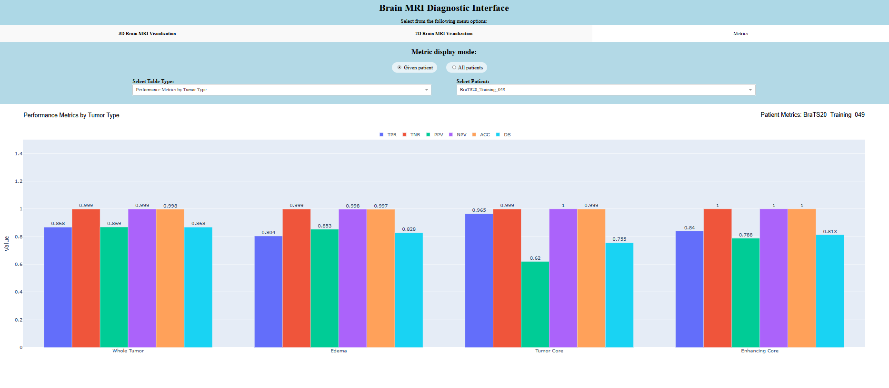
📂 Dataset
Trained on BraTS 2020 dataset with 369 MRI studies, four modalities per patient, and expert-annotated tumor masks.
🚀 Applications
- Medical image analysis research
- AI-assisted diagnostic workflows
- Clinical visualization tools
- Educational demonstrations
🔮 Future Improvements
- 3D U-Net implementation
- Cloud deployment
- Improved segmentation accuracy
- Real-time clinical integration
- Automated tumor progression tracking
Client-Server Application — Tkinter & Socket
View on GitHubThis project is a simple client-server application built using Python's Tkinter for the graphical user interface and socket for network communication. The server counts the number of positive ("igen") and negative ("nem") votes received from clients.
✨ Features
Client
- Graphical interface to send messages to the server
- Displays sent messages in a text area
- "Send" button to send messages
- "Exit" button to disconnect from the server
Server
- Graphical interface to manage the server
- Displays received messages from clients
- Displays sent responses to clients
- "Start Server" button to start listening for clients
- "Stop Server" button to stop the server
- "Display Votes" button to show count of positive and negative votes
⚙️ Requirements
- Python 3.x
- Tkinter (usually included with Python)
- Socket programming (standard library)
Personal Portfolio Website — HTML, CSS & JavaScript
View on GitHubThis repository contains my personal portfolio website created to showcase my skills, projects, and development experience. Built with HTML, CSS, and JavaScript, it features a clean, responsive design and interactive elements.
✨ Features
Frontend
- Fully responsive layout (mobile, tablet, desktop)
- Interactive project cards with hover effects
- Smooth scrolling navigation
- Dark/light theme toggle (JavaScript)
Content Sections
- Project gallery with live demos and GitHub links
- Skills display with progress bars or icons
⚙️ Requirements
- Modern web browser (Chrome, Firefox, Edge, Safari)
- Basic knowledge of HTML/CSS/JS for customization
- Optional: GitHub Pages for hosting
FPGA-Based Distance Measurement System — UKDA_Project 2024
View on GitHub
Project Title: Distance Measurement with FPGA: Accuracy and Efficiency on the Nexys A7
Author: Dávid Árvai
Major: Computer Science
Course: Reconfigurable Digital Circuits
📌 Project Overview
The goal of this project is to develop a real-time distance measurement system using a Nexys A7-100T FPGA development board and a GP2Y0A60SZLF infrared (IR) distance sensor. The system leverages the FPGA's built-in XADC module to digitize the analog signal from the sensor. The processed distance value is then displayed on the board's 7-segment display. This project demonstrates the application of FPGAs in embedded systems, highlighting their capability for reliable and precise data acquisition and processing.
📋 Requirements
General Requirements
- Measurement Range: 10 cm – 150 cm
- Update Rate: Real-time operation with a minimum frequency of 10 Hz
- Display Accuracy: ±5 cm
- System Reliability: Robust and reliable processing of data from the infrared sensor
Functional Requirements
- Acquire analog signals from the GP2Y0A60SZLF sensor
- Digitize the analog signals using the FPGA's XADC module
- Convert the sensor's output voltage into a corresponding distance value
- Display the calculated distance on the 7-segment display
Non-Functional Requirements
- Response Time: Fast operation with a response time of less than 100 ms
- Resource Utilization: FPGA logic utilization must remain within the capabilities of the Nexys A7-100T
- Environmental Stability: Stable operation in a temperature range of 0–50 °C
- Modularity: The design should be easily expandable to incorporate additional displays or sensors
🔧 Specifications
Hardware Specifications
| Component | Description |
|---|---|
| FPGA Platform | Nexys A7 (Xilinx Artix-7-based FPGA) |
| Sensor | GP2Y0A60SZLF Infrared Distance Sensor |
| On-board ADC | Xilinx XADC Module |
| Display | 7-segment display (integrated into the Nexys A7 board) |
Software Specifications
| Component | Description |
|---|---|
| Development Environment | Vivado Design Suite |
| Hardware Description Language | VHDL |
| Clock Frequency | 100 MHz (derived from the Nexys A7's internal oscillator) |
| Data Processing | Linear interpolation for scaling the sensor's analog data to distance values |
📊 Repository Stats
- Stars: 0
- Watchers: 1
- Forks: 0
🔤 Languages Used
- 🐚 Shell: 32.4%
- 🔷 Verilog: 20.2%
- 🟡 VHDL: 17.4%
- 🔶 Tcl: 15.7%
- 🟨 JavaScript: 12.2%
- 📊 Stata: 1.1%
- ⚙️ Other: 1.0%